{kind=link}
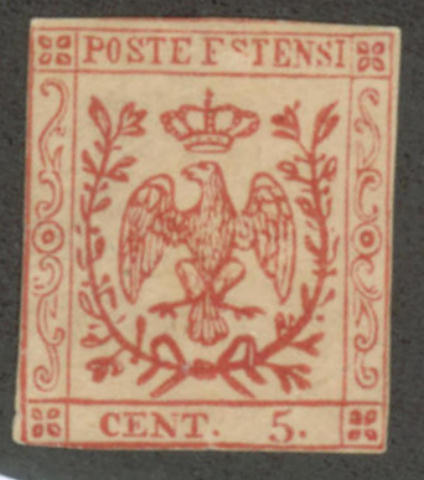
Rosendo Fernandez
Return To Catalogue - Torres (Placido Ramon de), other forgeries
Note: on my website many of the
pictures can not be seen! They are of course present in the
catalogue;
contact me if you want to purchase the catalogue.
Stamp dealer and forger of Barcelona (Spain). He collaborated with Miguel Rodriguez Sanchez (see for more information the book 'Philatelic Forgers, their Lives and Works' by V.E.Tyler). He also lived for some period in Livorno (Via Maggi N.2), where he apparently collaborated with Giulio Cesare Bonasi.
According to Gerhard Lang, de Torres was born in Estepona, Malaga in 1847.
Books issued by Torres (from http://www.filateliadigital.com/uploads/catalogos_esp.pdf):
Livorno/Madrid, Plácido Ramón de TORRES CATALOGO PREZZO CORRENTE DI TUTTI FRANCO-BOLLI CREATI DAL 1840 AL 1874 (can be downloaded from Google).
Barcelona, Plácido Ramón de TORRES: ALBUM ILUSTRADO PARA LOS SELLOS DE CORREO CONTENIENDO LA DESCRIPCIÓN Y PRECIO DE TODOS LOS SELLOS EMITIDOS DESDE 1840 Á 1879.
For Torres (Placido Ramon de) forgeries of other countries, click here.
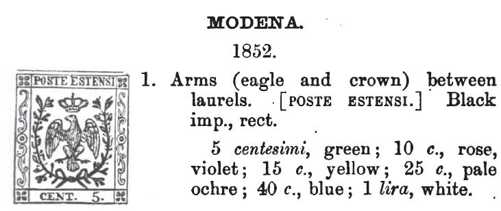
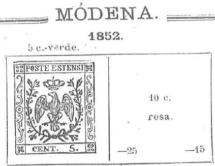
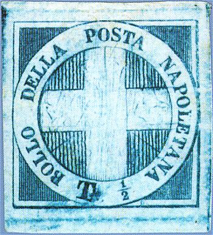
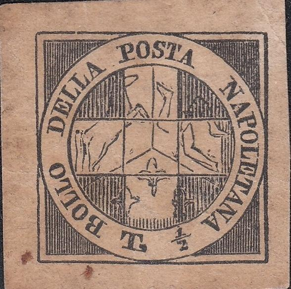
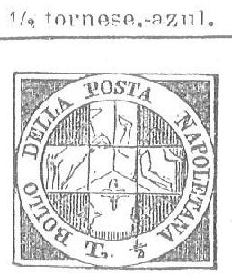


Papal States 40 c 1867 stamp and a forgery made by Senf in 1875
according to 'Roman States Forgeries, the issue of 1867-1868' by
F.J.Levitsky and F.A.Jenkins. It has a strange "40.
Cent". This forgery can also be found in the catalogue of
Placido Ramon de Torres "Album Illustrado para Sellos de
Correo" of 1879 on page 86 (see third image).
This 2 c forgery also appears in the de Torres catalogue of 1879
on page 86. It is identical to a forgery listed in the book Roman
States Forgeries, the issue of 1867-1868' by F.J.Levitsky and
F.A.Jenkins. Sorry, no image available yet of the 'real' forgery.
This forgery of the 2 Baj value is attributed to Senf in the book
Roman States Forgeries, the issue of 1867-1868' by F.J.Levitsky
and F.A.Jenkins. It has a ":" instead of a
"." behind "BAJ". The "B" and
"J" of this word are quite different from a genuine
stamp. Sorry, no image available yet of the 'real' forgery. It
appears in the de Torres catalogue of 1879 on page 86.
This forgery of the 4 Baj value is described in the book Roman
States Forgeries, the issue of 1867-1868' by F.J.Levitsky and
F.A.Jenkins. It has no dot behind the "4", the
"F" is strange and the "S" of
"POSTALE" has large serifs and "POSTALE" is
written as "POSTATE". Sorry, no image available yet of
the 'real' forgery. It appears in the de Torres catalogue of 1879
on page 86.
This forgery of the 5 Baj value is described in the book Roman
States Forgeries, the issue of 1867-1868' by F.J.Levitsky and
F.A.Jenkins. It has a rather small "5", the
"S" of "POSTALE" is stange and the
"A" of "BAJ" larger. Sorry, no image
available yet of the 'real' forgery. It appears in the de Torres
catalogue of 1879 on page 86.
This forgery of the 6 Baj value is described in the book Roman
States Forgeries, the issue of 1867-1868' by F.J.Levitsky and
F.A.Jenkins. Sorry, no image available yet of the 'real' forgery.
It appears in the de Torres catalogue of 1879 on page 86.

This forgery of the 7 Baj value is described in the book Roman
States Forgeries, the issue of 1867-1868' by F.J.Levitsky and
F.A.Jenkins. It has only a line on the right upper key part
(instead of a cross), also the letters are different. The top
part of the "B" of "BAJ" is too large. Sorry,
no image available yet of the 'real' forgery. It appears in the
de Torres catalogue of 1879 on page 86.
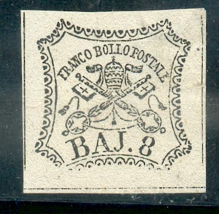 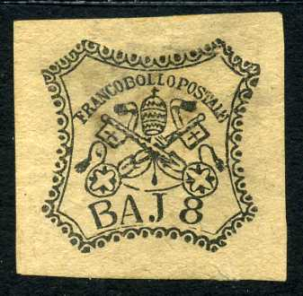 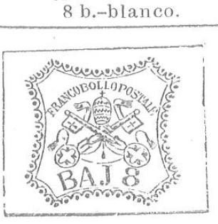
Papal States 8 Baj genuine stamp and forgery. The letters in
"BAJ" are different, there is no dot behind this word
in the above forgery. There are other differences, for example
the "8" is joined to the key above it. According to
'Roman States Forgeries the Issues of 1852' by F.J. Levitsky it
was made by the forger Senf in 1875. It
appears in the de Torres catalogue of 1879 on page 86.


"PAPM" instead of "PARM" forgeries. The last
images are scanned from Le Timbre Poste by Moens and from Gray
and de Torres catalogues.
Parma, genuine 40 c stamp. In the above forgery (second image) of the 40 c the "A" of "STATI" is too broad and the value "40" doesn't resemble the genuine stamp. Furthermore there is no cross on top of the crown, instead there is a pearl. The bogus 10 c red was probably issued by the same forger. The inscription on top appears to be "STATI PAPM" ("P" instead of "R"). I've also seen the 10 c in the bogus color green. The oldest "PAPM" forgery I have seen is from Moens in his Le Timbre Poste No.129, page 71 from September 1873. This forgery is identical to the image provided in the John Edward Gray 'The Illustrated Catalogue of Postage Stamps' of 1870 on page 40 (see image above). This forgery can also be found in the catalogue of Placido Ramon de Torres of 1879 on page 85 (see last image). Note that there are scratches on the de Torres design, which don't appear on the Gray design or on the forgeries.
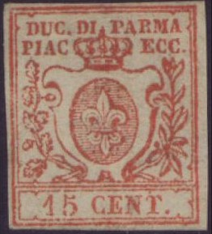 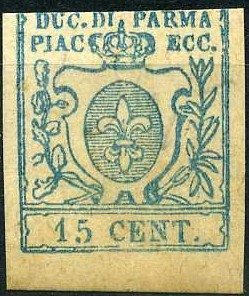 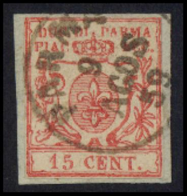
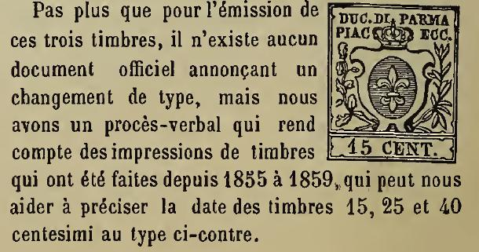
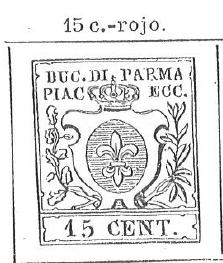
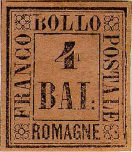


Romagna, genuine stamp and forgery of the 4 b in color blue
(first and second image). The '4' has a too long left part. This
forgery is identical to the image provided in the John Edward
Gray 'The Illustrated Catalogue of Postage Stamps' of 1870 on
page 45 (see third image above). In 1872 it appears again in Le
Timbre-Poste by Moens No120, page 92
(fourth image). An image of this forgery can also be found in the
catalogue of Placido Ramon de Torres of 1879 on page 83 (fifth
image).


Genuine stamp and a very primitive forgery of the 1 Cr value
Tuscany first stamps. The lion has a weird face, small crown and
almost straight hair. This forgery is identical to the image
provided in the John Edward Gray 'The Illustrated Catalogue of
Postage Stamps' of 1870 (except that it is in black color there,
see next image). It might have been based on this image or have
been reprinted from the plates to make the book. To make things
even more complicated, the catalogue of Placido Ramon de Torres
"Album Illustrado para Sellos de Correo" of 1879 also
has the same image! (information passed to me thanks to Gerhard
Lang, 2016).
{kind=link}
{kind=link}
{kind=link}
{kind=link}
{kind=link}
{kind=link}
{kind=link}